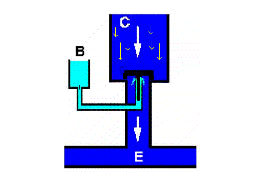
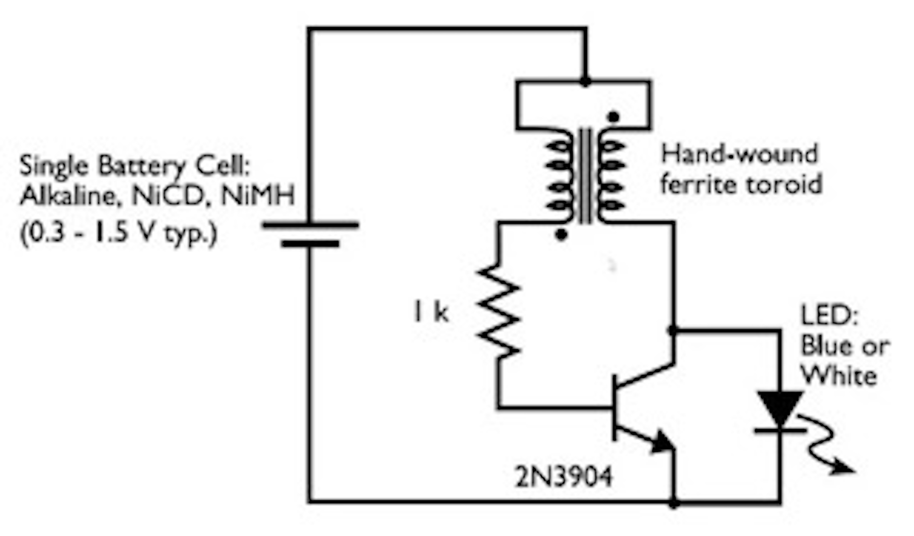
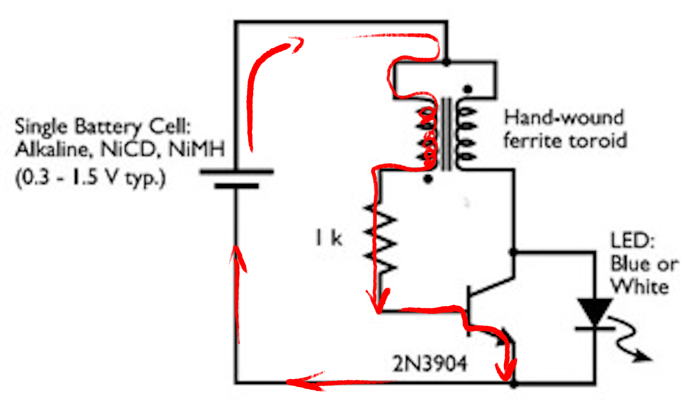
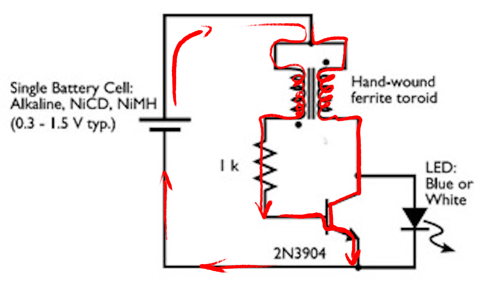
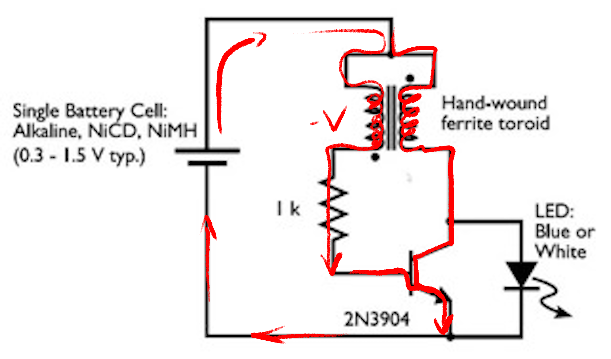
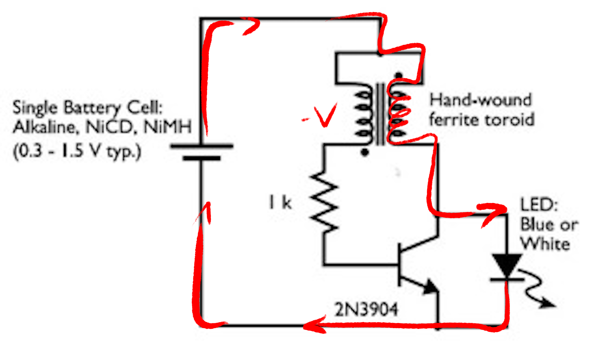
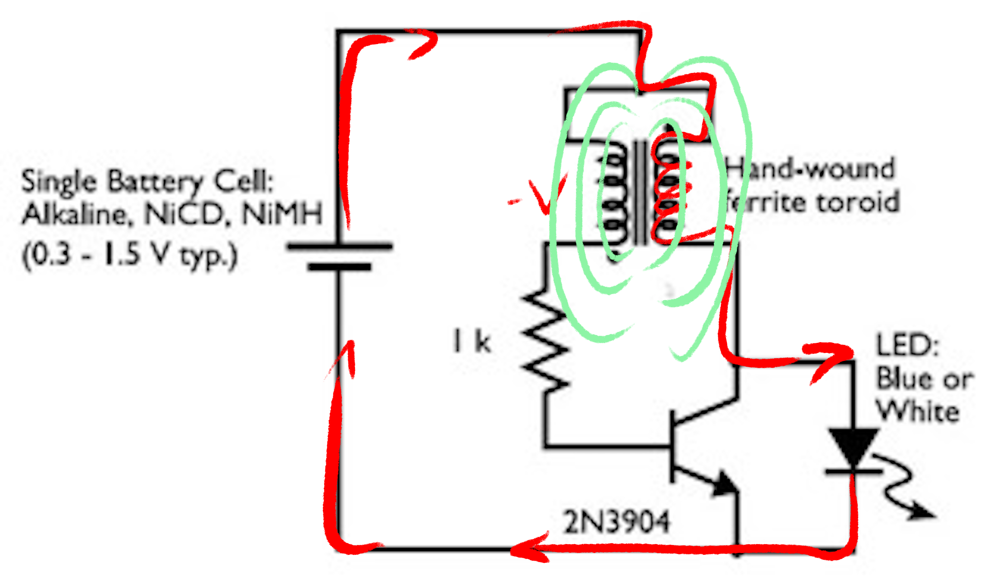
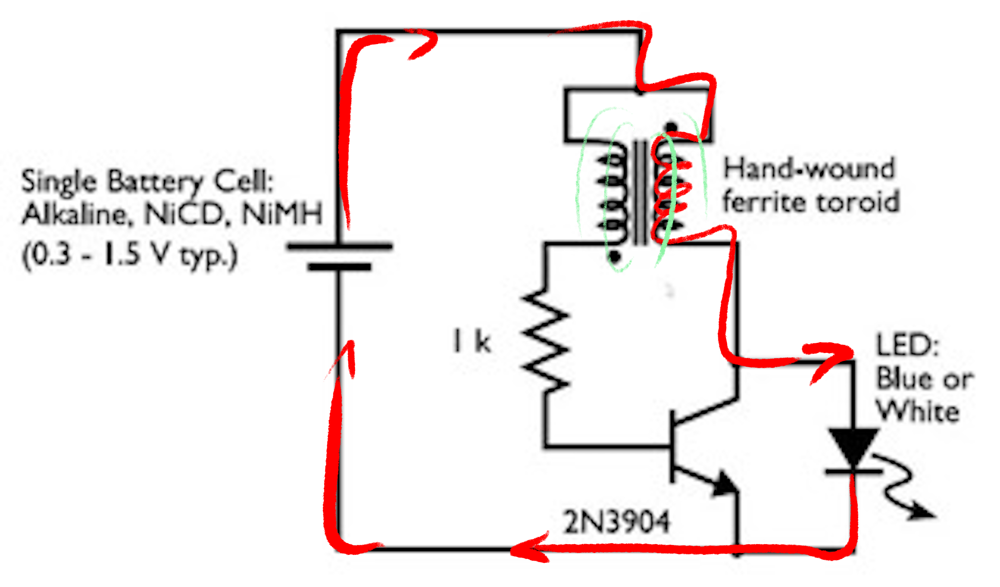
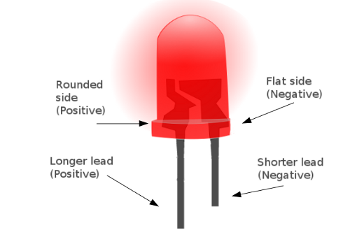

Soilpunk - Joulethief
This document is viewable as a webpage or as a slideshow
Joulethief

Transistor
Water analogy: the little bit of water from B to E opens the gate for the bigger flow from C to E
Joulethief
Joulethief
A small current flows from the battery through the coil and the base-emitter path of the transistor. This opens the emittor-collector path of the transistor.
Joulethief
Electricity is now able to travel through the second coil and through the collector-emitter channel of the transistor.
Joulethief
The increasing amount of electricity through the second coil generates a negative voltage in the first coil. An negative voltage is induced in the first coil, which cause the transistor to close.
Joulethief
With the transistor closed the energy starts to flow through the output (led).
Joulethief
The inductor is now powered by the magnetic field of the coil.
Joulethief
When the magnetic field is gone, the whole process starts over.
Joulethief
A more detailed explanation can be found on instructables
Led
Make sure to get the LED polarity right. Short leg goes to ground!